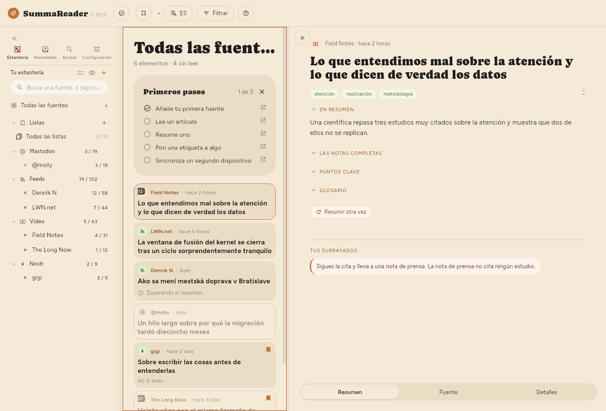

← La ventana · Contenido · Resúmenes →
Leer
Haz clic en un artículo o pulsa ↵. Según la ventana y la disposición elegida en Configuración › Básico › Navegación › Paneles y estantería › Disposición, se abre junto a la lista, encima o debajo de ella, u ocupa toda la ventana. En un teléfono siempre ocupa toda la pantalla.

Las tres pestañas
- Resumen: lo que escribió el modelo, en tres secciones plegables: En resumen (tres frases), Puntos clave (uno por tema, cada uno con un título y un par de frases que lo explican) y Glosario (los términos que le pareció útil definir). Los puntos de un vídeo llevan marcas de tiempo que saltan a ese momento.
Shift+1–3los pliegan. - Fuente: el propio artículo, o la transcripción.
- Detalles: de dónde vino, cuándo, qué modelo lo resumió y cuánto costó.
1–3 saltan de una a otra.
Los resúmenes escritos antes de que la aplicación dejara de pedirlas también llevan Las notas completas, una versión en prosa más larga. Ya nada las produce: lo que aportaban pasó a la visión general y a las explicaciones de cada tema.
La barra de herramientas
- Guardar: lo archiva en la lista que la estantería muestra rellena, que es Guardados hasta que elijas otra. El ▾ de al lado, un clic derecho o una pulsación larga eligen otra lista o crean una.
- Marcar leído: en artículos de un feed. Con el filtro de no leídos activado, te lleva al siguiente; el último cierra el lector.
- Eliminar: solo en artículos que has guardado. Pregunta dos veces, y la segunda pulsación dice ¿Eliminar en todas partes? porque quita el artículo de todos los dispositivos con los que sincronizas e impide que un feed lo vuelva a traer.
Pasar de un artículo a otro
Arrastra el artículo hacia un lado, o usa j / k, o Espacio al final del artículo. Arrastrar a la derecha en el primero vuelve a la lista. En un teléfono, o en una ventana estrecha, arrastrar desde el borde izquierdo vuelve a la lista y arrastrar desde el borde derecho abre la página web. Tirar más allá del final o del principio del artículo no hace nada hasta que le eliges una acción.
Tirar actúa cuando sueltas. Cuando has tirado lo bastante, un aviso breve nombra la acción. Si vuelves atrás antes de soltar, no pasa nada. El artículo siguiente entra entonces desde abajo, y el anterior desde arriba. Con j y k el artículo cambia del mismo modo. En una pantalla táctil, tirar hacia el artículo siguiente o el anterior mete ese artículo con tu dedo mientras tiras. El aviso aparece encima cuando has tirado lo bastante, y el artículo vuelve atrás si sueltas demasiado pronto.
En el último artículo de la lista, arrastrar hacia un lado o tirar hacia el artículo siguiente marca el artículo como leído y vuelve a la lista. Un mensaje te dice que era el último artículo, y durante el tirón el aviso lo dice. En el último artículo de una página, las dos cosas abren el primer artículo de la página siguiente.
Para elegir cuánto tienes que tirar antes de que soltar haga la acción, selecciona Corta, Media o Larga en Configuración › Básico › Navegación › Gestos › Distancia del tirón. Son un tercio, la mitad y tres cuartos de la altura del artículo. Larga es la opción por defecto. Un gesto rápido hace la acción a cualquier distancia.
Puedes dar a cada uno de estos seis gestos una acción distinta, por ejemplo Marcar leído / no leído o Marcar leído y abrir el siguiente. Se eligen en Configuración › Básico › Navegación › Gestos › Gestos en el artículo. El deslizamiento de una entrada de la lista está en Configuración › Básico › Navegación › Gestos.
En un teléfono o una tableta, tira de la lista hacia abajo para recargarla o para comprobar tus fuentes. La aplicación pregunta: Recargar la lista o Buscar artículos nuevos. Para hacer una de las dos sin pregunta, elígela en Configuración › Básico › Navegación › Gestos › Tirar de la lista hacia abajo.
Desplazamiento
Un clic con el ratón da las teclas al panel en el que haces clic. Un clic en un artículo de la lista lo abre y deja las teclas en la lista, así que ↓ y ↑ siguen recorriendo desde ese artículo. Para desplazar el artículo con las teclas, haz clic en el artículo. Un toque con el dedo no cambia qué panel tiene las teclas.
Con el artículo activo, ↓ y ↑ lo mueven unas líneas de su texto, igual que un paso de la rueda del ratón sobre él. Cuántas líneas lo decide Configuración › Básico › Navegación › Desplazamiento › Desplazar: 1, 2, 3, 5 u 8, y 3 al principio. El paso sigue el tamaño del texto y el interlineado, así que son las mismas líneas con cualquier ajuste. Un panel táctil conserva su propio movimiento fino.
Av Pág y Re Pág mueven nueve décimas de pantalla, de modo que las últimas líneas leídas quedan arriba en la pantalla siguiente. Inicio y Fin van al principio y al final. Estas cuatro se detienen en los extremos del artículo y no pasan de ahí.
Espacio es la tecla que sigue adelante. Mueve una página hacia abajo y, cuando el artículo ya está al final, abre el siguiente, que entra deslizándose desde abajo como con j. Mayús+Espacio mueve una página hacia arriba y, desde el principio del artículo, abre el anterior. Un artículo que cabe en la ventana pasa con el primer Espacio. Mantener la tecla pulsada no pasa más de un artículo.
Tab y Mayús+Tab se mueven entre la estantería, la lista y el artículo, y también → y ←. Se detienen en el primer y el último panel en vez de dar la vuelta, y no hacen nada cuando la ventana muestra un solo panel. Desde esta versión ← y → ya no recorren la lista ni abren el artículo anterior y el siguiente, y tampoco pliegan ni despliegan un grupo en la estantería: allí ↵ pliega un grupo y ⇧↵ filtra por él. Arrastrar hacia un lado sigue pasando el artículo.
Estos movimientos se deslizan hasta el nuevo lugar en vez de saltar. Configuración › Básico › Navegación › Desplazamiento › Desplazamiento suave lo desactiva. También está desactivado cuando el sistema pide reducir el movimiento.
Un artículo nuevo se desliza hasta su sitio: desde el lado en un teléfono, y desde arriba o abajo al recorrer la lista. Para que aparezca al instante, desactive Configuración › Básico › Navegación › Desplazamiento › Deslizar los artículos.
Cuando no hay texto
No todos los artículos llegan con su texto. El lector dice cuál de estos casos es:
| Dice | Qué pasó |
|---|---|
| Este vídeo no tiene subtítulos | No hay transcripción que leer |
| YouTube pidió a la aplicación que fuera más despacio | YouTube rechazó los subtítulos por ahora. En Linux, la aplicación intenta primero obtenerlos de la página del vídeo, en su renderizador de páginas oculto, de su reproductor o de su panel Mostrar transcripción |
| La página llegó, pero no tenía ningún artículo | La página construye su texto en el navegador |
| El sitio mostró una comprobación antirrobots | Una página de «demuestra que eres humano» |
| Tras un muro de suscripción | Lo que llegó fue la oferta |
| La página ya no existe | Se retiró o se movió |
| No está en este dispositivo | Lo tiene otro dispositivo, o nadie lo ha descargado |
Las comprobaciones posteriores vuelven a intentar por sí solas, unas cuantas veces, el caso de ir más despacio. De los demás, solo vale la pena reintentar el último, y Obtener el texto hace eso.
Cuando las comprobaciones dejan de intentarlo, la campana muestra «N articles from <source> could not be read». Obtener el texto en esa fila los intenta todos otra vez de una vez, y Detener en la franja de estado lo termina.